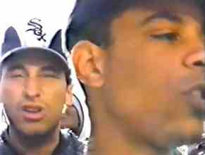

O Rap é uma Arma

FICHA TÉCNICACREDITSCREDITS
Realização — Kiluanje Liberdade
País — Angola
Língua — Português
Ano — a completar
Duração — a completar
Produção — a completar
Director — Kiluanje Liberdade
Country — Angola
Language — Portuguese
Year — to be completed
Duration — to be completed
Production — to be completed
Regie — Kiluanje Liberdade
Land — Angola
Taal — Portugees
Jaar — aan te vullen
Duur — aan te vullen
Productie — aan te vullen
SINOPSE
Espaço reservado para a sinopse definitiva de O Rap é uma Arma.
CONTEXTO
Esta área reunirá o enquadramento histórico e cultural do filme: a emergência e o papel do rap angolano, as culturas juvenis, a cidade, a intervenção social e política, a oralidade e as transformações da linguagem.
SYNOPSIS
Reserved for the definitive synopsis of O Rap é uma Arma.
CONTEXT
This section will present the film’s historical and cultural context: Angolan rap, youth cultures, the city, social and political intervention, orality and transformations of language.
SYNOPSIS
Ruimte voor de definitieve synopsis van O Rap é uma Arma.
CONTEXT
Hier komt de historische en culturele context van de film: Angolese rap, jeugdculturen, de stad, sociale en politieke betrokkenheid, oraliteit en veranderingen in taal.
EXIBIÇÕES · FESTIVAIS · TELEVISÃO
Cronologia a completar.
SCREENINGS · FESTIVALS · TELEVISION
Chronology to be completed.
VERTONINGEN · FESTIVALS · TELEVISIE
Chronologie wordt aangevuld.